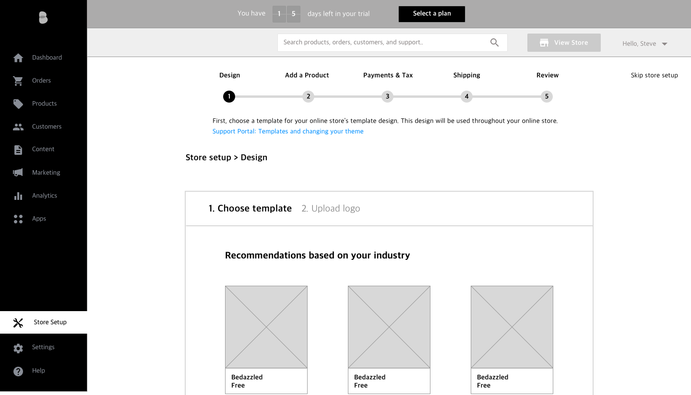

Client Project
My Role - UX, visual design, research
This was a client project I worked on with a group of two other UX designers completed over the course of 3 weeks. We worked with the design team at Bigcommerce to create an onboarding flow for the new users. Our team collectively worked on the research and ideation, and I was responsible for wireframing, prototyping and visual design of the project.
Our task was to create an onboarding process which guides the new users through the basic store set-up process. The new onboarding flow will acquaint them with the many features of Bigcommerce and ultimately increase the conversion rate.
The existing version of the product sends the users directly into the product's complex UI, and presents a checklist of tasks to complete. This proved to be unintuitive and confusing for many of the users.
The team at Bigcommerce also tasked us to develop a solution to reducing the large amount of calls the customer support team receives.
To streamline the store set-up process while eliminating the distractions, we decided to create a flow outside of the product's UI.
Our design will:
We conducted user interviews with past and current Bigcommerce customers, as well as users of competitor products to understand what their experience was.
We made 6 calls to Bigcommerce's customer support team and gained valuable insights on what the users were experiencing.
For the competitive analysis, we decided to focus on examining only the onboarding process of the competitors' products.
Insights:
Based on our multiple user interviews and insights from the Bigcommerce Customer Support team, we formed two personas who would guide us in our design decisions.
Ceramics Artist
"I'm eager to showcase and sell my beautiful art!"
Krista is a creator and an artist. After speaking with friends and researching other artists, she was confident that she could start a viable business online. Krista enjoys learning new skills on her own, so she is comfortable on the computer though she wouldn't consider herself an expert. She prefers to set-up and maintain the site herself rather than hire someone because she enjoys her independence.
Brick and Mortar Toy Store Owner
"My shop needs to get revamped for the 21st century or it's history."
Jack has a successful toy store in San Jose. Business has been slowing down the past couple years, so he wants to expand online to promote his brand and increase sales. He is reluctant about the idea because he doesn't feel comfortable around computers and is easily overwhelmed with technology. However, he feels that this is the best way to get his business back on track.
We also decided to create a journey map of the user's experience through the current onboarding process of Bigcommerce to develop empathy and keep the user's needs and pain points in mind for our ideation process.
From all the information and insights we gathered, we decided to focus on these main points for our design.
5-Step Set-up Guide
The 5-step set-up guide will replace the existing checklist and provide a more clear and guided onboarding experience.
Fast and Easy Set-up
The set-up process will only ask for a minimum amount of required information, and help the users get their store up as quickly as possible.
Emotional Investment
"Choose a design" and "add a product" will be the first two steps of the set-up process, which will create a sense of attachment and emotional investment early on to decrease abandonment.
Discoverability of Support Portal
The set-up process will also provide help in each step by providing links to relevant Support Portal articles.
After sketching and iterations, we came up with two versions of the designs. One was within Bigcommerce's UI, while the other one was completely separate.
Version 1
This version would familiarize the users with Bigcommerce's UI, but would potentially cause more distraction.
Version 2
This version would funnel the users through the set-up process, but wouldn't introduce Bigcommerce's UI until after set-up.
We decided to run our usability tests with Version 1 with a few ecommerce business owners. We learned that:
From this result, we decided to bring the set-up guide out of Bigcommerce's UI, and go with Version 2 for our final design.
In the previous flow, the users were sent directly to the product's complex UI immediately after sign up, and were often left feeling lost. The new onboarding flow funnels the users through a guided set-up process.
Before
After
From our user interviews, we learned that one of the most satisfying parts of the online store creation experience was choosing a design for the website. As a result, we decided to put this as the first step of the process to create a feeling of accomplishment and investment early on.
We also added a preview feature, which shows the user a simplified preview version of their website with their uploaded logo.
In our design, we limited the number of required fields to a minimum. This was done in order to not overwhelm the users in the process, but also allowing them to have a feeling of accomplishment going through the process.
Our new design also increases the discoverability of Bigcommerce's Support Portal, and provides links to relevant articles which answer the common questions asked by the users. This aims to lead more users to the Support Portal, and decrease the number of incoming calls to customer support.
When the store is being created in the back-end, there is an inevitable 20-30 second loading time. We decided to utilize this otherwise wasted time by including informational slides educating the users about Bigcommerce's advanced features and tools, which the older version of the product was struggling on accomplishing.
Before
After
For this project, we had no access to a list of current customers to contact for an interview. We worked around this by conducting extensive interviews with customer support, who are in the forefront of handling customer experience. This provided us with valuable information which we were able to base our design decisions on.
We also scavenged for potential subjects within our contacts, and found a few ecommerce business owners to gain insights from as well.
Sometimes, certain external limitations and situations can affect the process of your projects, but I learned that it is important to work with what you have, and produce the best results you can from it.